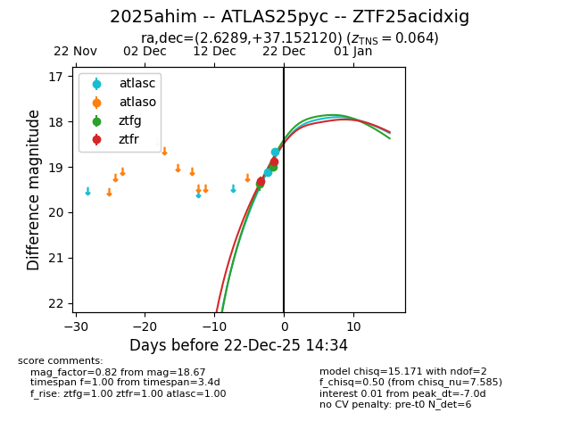
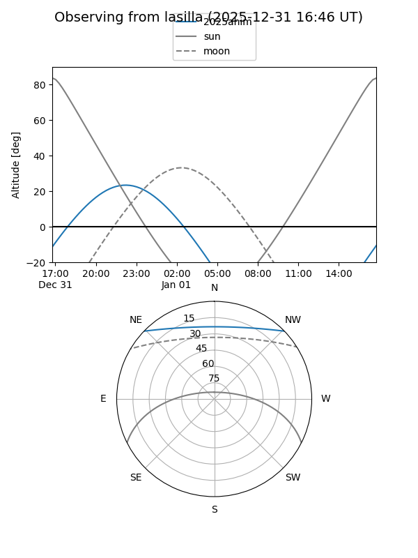
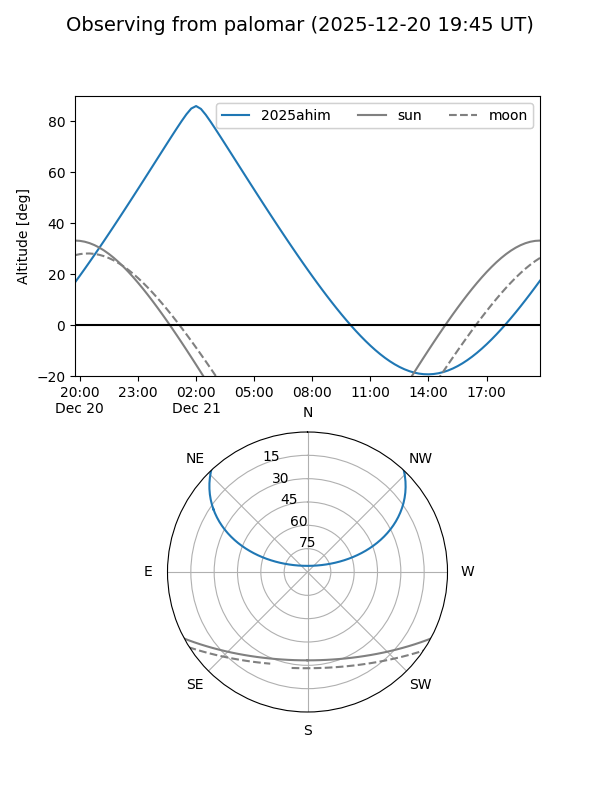

2025ahim
Target 2025ahim at 2025-12-22 14:36
Aliases and brokers:
FINK: fink-portal.org/ZTF25acidxig
Lasair: lasair-ztf.lsst.ac.uk/objects/ZTF25acidxig
ALeRCE: alerce.online/object/ZTF25acidxig
TNS: wis-tns.org/object/2025ahim
YSE: ziggy.ucolick.org/yse/transient_detail/2025ahim
alt names
ZTF25acidxig (ztf,fink_ztf)
2025ahim (tns,yse)
ATLAS25pyc (atlas)
Coordinates:
equatorial (ra, dec) = 2.6289,+37.15212
equatorial (HMS+DMS) = 00:10:30.93,+37:09:07.63
galactic (l, b) = (113.9454,-25.00452)
Flags:
confirmed ia
Photometry:
last atlasc=18.67, ztfg=19.00, ztfr=18.89
2 atlasc, 2 ztfg, 2 ztfr detections
Lightcurve

Visibility


Additional plots